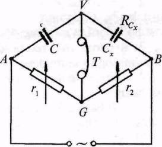
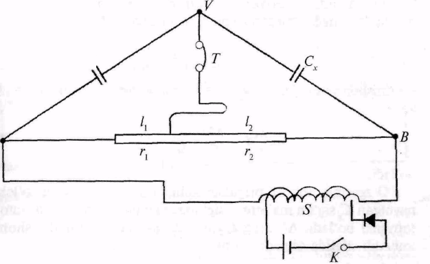
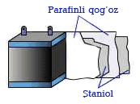
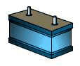
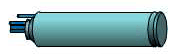
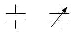
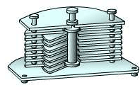

Kondensatorlarning elektr siğimini aniqlaş
1Işning maqsadi va kutilayotgan natijalar
Özgaruvçan tokda işlaydigan Uitston köprigi yordamida, siğimi ma’lum (etalon) kondensatorlardan foydalanib, kondensatorning noma’lum elektr siğimini aniqlaş; kondensatorlarni ketma-ket va parallel ulaş formulalarini tajribada tekşiriş.
Fan dasturidagi ta’lim natijalari: TN1 — Elektr va magnit zanjirlarini töğri yiğiş, ölçov asboblaridan (ampermetr, voltmetr, multimetr, osillograf) töğri va xavfsiz foydalaniş; TN2 — Fizik hodisalarni tajribada namoyiş qiliş, ölçov işlarini bajariş va natijalar aniqligini ta’minlaş; TN5 — Ölçaş natijalarini matematik va grafik qayta işlaş, tizimli va tasodifiy xatoliklarni hisoblaş; TN14 — Tajriba ma’lumotlari asosida grafiklar (VAX, rezonans egri çiziqlari va h.k.) çiziş va tahlil qiliş.
2Kerakli jihozlar
- Telefon (quloqçin) — nol indikatori
- Kondensatorlar magazini (etalon siğim)
- Reoxord (yoki darajalangan reostat, yoki ikkita qarşiliklar magazini)
- Zummer yoki tovuş generatori (özgaruvçan tok manbai)
- Akkumulator, kalit, ulaş simlari
- Siğimi aniqlanişi kerak bölgan kondensatorlar
3Nazariy qism
2.1. Özgaruvçan tok köprigi
Sxema özgarmas tok köprigidan farqli ravişda ikki yelkasiga qarşilik örniga kondensatorlar ulanadi (2.1-rasm). Köprikning qarama-qarşi uçlariga (\(A\) va \(B\)) özgaruvçan tok generatori, qolgan ikki uçiga (\(V\) va \(G\)) özgaruvçan tok indikatori — telefon ulanadi. \(r_1\) va \(r_2\) — özgaruvçan qarşiliklar, \(C\) — etalon kondensator, \(C_x\) — siğimi noma’lum kondensator. \(r_1\) va \(r_2\) ni özgartirib, telefonda tovuş eşitilmasligiga, ya’ni \(V\) va \(G\) nuqtalar potensiallarining amplituda va fazasi bir xil bölişiga erişiladi.

2.2. Muvozanat şarti
Köprik yelkalarining kompleks qarşiliklari:
$$z_1=r_1,\qquad z_2=r_2,\qquad z_C=\frac{1}{j\omega C},\qquad z_x=\frac{1}{j\omega C_x},\qquad j=\sqrt{-1}.$$Muvozanat şarti:
$$\frac{z_C}{z_x}=\frac{z_1}{z_2}\;\Rightarrow\;\frac{C_x}{C}=\frac{r_1}{r_2}\;\Rightarrow\;C_x=C\,\frac{r_1}{r_2}.\qquad(2.3)$$Reoxord işlatilsa, \(r_1/r_2=l_1/l_2\) (sim bir jinsli). Kondensatorlar yelkalarining aktiv qarşiligi siğim qarşiligiga nisbatan juda kiçik bölgani uçun hisobda e’tiborga olinmaydi. Muvozanat şarti generator çastotasiga boğliq emas.

2.3. Kondensatorlarni ulaş
Parallel ulaşda: \(C=C_1+C_2\); ketma-ket ulaşda: \(\dfrac1C=\dfrac1{C_1}+\dfrac1{C_2}\). Siğim qarşiligi \(X_C=\dfrac{1}{\omega C}=\dfrac1{2\pi fC}\) çastota ortişi bilan kamayadi.
4Işni bajariş tartibi
- 2.2-rasmdagi elektr sxemani tuzing: \(AB\) — reoxord, \(r_1\) va \(r_2\) — reoxordning \(l_1\) va \(l_2\) yelkalariga mos qarşiliklar (reoxord örniga qarşiliklar magazinidan ham foydalaniş mumkin).
- \(l_1=l_2\) (\(r_1=r_2\)) holda kondensatorlar magazinidan \(C\) ni özgartirib, telefonda tovuşning eng past bölişiga erişing va \(C\) ni yozing.
- Reoxord jilgiçini surib, telefonda tovuş eşitilmasligiga erişing va \(l_1\), \(l_2\) ni yozing.
- \(C_x\) ni (2.3) formula böyiça hisoblang.
- Ölçaşni bir neça marta takrorlab, \(C_x\) ning örtaça qiymatini toping, absolyut, nisbiy va örtaça kvadratik xatoliklarni hisoblang.
- Ikkinçi noma’lum kondensator \(C_y\) uçun 1–5-bandlarni bajaring.
- Topilgan \(C_x\) va \(C_y\) kondensatorlarni ketma-ket, söng parallel ulab, 1–5-bandlarni bajaring.
- 7-bandda olingan natijalarni ketma-ket va parallel ulaş formulalari bilan soliştiring.
2.1-jadval. Noma’lum siğimni aniqlaş
| № | Kondensator | C, mkF | l₁, sm | l₂, sm | Cₓ = C·l₁/l₂, mkF | ΔCₓ | ε, % |
|---|---|---|---|---|---|---|---|
| 1 | Cₓ | ||||||
| 2 | Cₓ | ||||||
| 3 | Cₓ | ||||||
| 4 | C_y | ||||||
| 5 | C_y | ||||||
| 6 | C_y |
Jadval katakçalariga bevosita yoziş mumkin (ma’lumotlar sahifa yopilganda saqlanmaydi — hisobotga köçirib oling).
2.2-jadval. Ulaş formulalarini tekşiriş
| Ulaş | Ölçangan C, mkF | Hisoblangan C, mkF | Farq, % |
|---|---|---|---|
| Ketma-ket | |||
| Parallel |
Jadval katakçalariga bevosita yoziş mumkin (ma’lumotlar sahifa yopilganda saqlanmaydi — hisobotga köçirib oling).
5Natijalarni qayta işlaş va xatoliklar
Har bir ölçaş uçun \(C_x=C\,l_1/l_2\). Örtaça qiymat \(\overline{C_x}\), absolyut xatoliklar \(\Delta C_{x,i}=|\overline{C_x}-C_{x,i}|\) va nisbiy xatolik \(\varepsilon=\overline{\Delta C_x}/\overline{C_x}\cdot100\%\) topiladi. Bevosita xatolik: \(\dfrac{\Delta C_x}{C_x}=\dfrac{\Delta C}{C}+\dfrac{\Delta l_1}{l_1}+\dfrac{\Delta l_2}{l_2}\) — u \(l_1\approx l_2\) bölganda eng kiçik.
Ulaşni tekşiriş: hisoblangan \(C_{\parallel}=C_x+C_y\), \(C_{\text{k-k}}=C_xC_y/(C_x+C_y)\) qiymatlarni ölçanganlari bilan soliştiring.
Xatoliklar nazariyasi: laboratoriyaga kiriş bölimi.
Takroriy ölçaşlar kalkulyatori
Eng kiçik kvadratlar usuli (töğri çiziq y = kx + b)
6Namunaviy hisob
Şart. Etalon \(C=1{,}00\) mkF, reoxord uzunligi 100 sm. Muvozanat \(l_1=40{,}0\) sm, \(l_2=60{,}0\) sm da. \(C_x\) ni toping. \(\Delta C/C=1\%\), \(\Delta l=0{,}2\) sm bölsa, nisbiy xatolik qança? Şu kondensator \(C_y=1{,}00\) mkF bilan parallel va ketma-ket ulansa, siğim qança böladi?
Yeçimni körsatiş
\(C_x=1{,}00\cdot40/60=0{,}667\) mkF. \(\varepsilon=1\%+0{,}2/40+0{,}2/60=1\%+0{,}5\%+0{,}33\%\approx1{,}8\%\), \(\Delta C_x\approx0{,}012\) mkF. Parallel: \(0{,}667+1{,}00=1{,}67\) mkF; ketma-ket: \(0{,}667\cdot1/(1{,}667)=0{,}40\) mkF.
7Virtual laboratoriya: Kondensator siğimi (özgaruvçan tok köprigi)
- Kondensator 100 kiloomli rezistor orqali razryadlanmoqda. Vaqt doimiysi 50 sekund: şu vaqtda kuçlaniş 37 foizgaça tuşadi.
- Siğimni ikki marta kamaytiramiz. Egri çiziq tikroq böldi, vaqt doimiysi 25 sekundga qisqardi.
- Endi zaryadlaniş jarayoni. Vaqt doimiysi ötganda kondensator 63 foizgaça zaryadlanadi, beş tau dan keyin esa deyarli töliq zaryadlangan böladi.
- Namoyiş tugadi. Endi parametrlarni özingiz özgartirib, natijalarni jadvalga yozing.
Virtual laboratoriyadagi topşiriqlar
- \(R\) ni ikki marta oşiring: grafikning qaysi nuqtasi özgaradi va qaysi biri özgarmaydi?
- Model grafigidan \(U=0{,}37U_0\) bölgan vaqtni ölçab, \(C\) ni hisoblang va slayder qiymati bilan soliştiring.
- Zaryadlaniş rejimida \(5\tau\) vaqtdan keyin kondensator neça foizga zaryadlanadi?
Model öquv maqsadida soddalaştirilgan. “Asbob körsatişi” deb belgilangan qiymatlarga real ölçaşdagi kabi kiçik tasodifiy çetlaniş qöşilgan — takroriy ölçaşlar uçun foydalaning.
8Texnika xavfsizligi
- Elektrolitik kondensatorni qutbiga rioya qilib ulang: teskari ulanganda qizib, portlaşi mumkin.
- Nominal kuçlanişdan oşirmang.
- Katta siğimli kondensatorni işdan keyin rezistor orqali razryadlang, qisqa tutaştirmang.
9Himoya uçun nazorat savollari
- Elektr siğimi deb nimaga aytiladi va u SI tizimida qanday birlikda ölçanadi?
- Yassi kondensatorning siğimi qanday kattaliklarga boğliq?
- Özgaruvçan tok köprigining muvozanat şarti qanday yoziladi?
- Kondensatorning siğim qarşiligi tok çastotasiga qanday boğliq?
- (2.3) formulani keltirib çiqaring va undagi kattaliklarni tuşuntiring.
- Kondensatorlar ketma-ket va parallel ulanganda umumiy siğim qanday hisoblanadi?
Mustahkamlaş: Kondensator turlarini aniqlaş va Venn diagrammasi
Quyidagi rasmlar qaysi kondensatorga mosligini aniqlang: (1) kondensatorning sxemadagi şartli belgisi; (2) özgaruvçan siğimli kondensator; (3) qoğozli kondensator; (4) silindrsimon kondensator; (5) slyudali kondensator.





Söng Venn diagrammasida yassi, silindrik va sferik kondensatorlarning umumiy va farqli xususiyatlarini körsating.
Blits-sörov
- Elektr siğimi nima? U qanday birlikda ifodalanadi?
- Kondensator qanday asbob? Uning işlaş prinsipi qanday?
- Kondensatorlarni parallel ulaş nima va bunda siğim qanday ifodalanadi?
- Kondensatorlarni ketma-ket ulaşda siğim qanday ifodalanadi?
- Siğim qarşilik deganda nimani tuşunasiz? Uning birligi qanday keltirib çiqariladi?
- Kondensator siğimi voltmetr va ampermetr yordamida qanday aniqlanadi?
- Özgaruvçan tokda işlaydigan köprikning sxemasi va işlaş prinsipi qanday?
10Nazorat testi (10 savol, öz-özini tekşiriş)
1. Özgaruvçan tok köprigining muvozanat şarti (2.1-rasm):
2. Bu köprikda nol indikatori sifatida nima işlatiladi?
3. Nima uçun köprik özgaruvçan tok bilan ta’minlanadi?
4. \(C=2\) mkF, \(l_1=30\) sm, \(l_2=70\) sm. \(C_x\) =
5. Siğim qarşiligi \(X_C\):
6. Ikki 2 mkF li kondensator parallel ulansa, umumiy siğim:
7. Ikki 2 mkF li kondensator ketma-ket ulansa, umumiy siğim:
8. Reoxordli köprikda eng kiçik nisbiy xatolik qaçon olinadi?
9. Muvozanat şarti generator çastotasiga:
10. Elektr siğimining SI birligi:
Bu test öz-özini tekşiriş uçun; rasmiy oraliq nazorat HEMIS’da ötkaziladi.
11Sun’iy intellekt bilan işlaş
Men pedagogika oliygohining fizika yönalişi talabasiman. “Kondensatorlarning elektr siğimini aniqlaş” laboratoriya işini bajardim. 1) Mening ölçaş jadvalimni tekşir: birliklar, xonalar soni, aniq xato yozuvlar. 2) Natijani qayta işlaş bosqiçlarini tuşuntir (örtaça, Styudent usuli, bilvosita ölçaş xatoligi), lekin hisobni özim bajaraman. 3) Natijam jadval qiymatidan farq qilsa, mumkin bölgan tizimli xatolik manbalarini sanab ber. 4) Himoya uçun 3 ta savol ber. Çeklov: formulalarni LaTeX’da yoz, işonçing komil bölmagan joyni oçiq ayt. [Şu yerga ölçaş jadvalingizni qöying]
12Adabiyotlar
- [2] Toşxonova J.A. va boşq. Fizikadan praktikum. Elektr va magnetizm. — Toşkent, 2006.
- [5] Nurmatov N. Elektr va magnetizm fanidan praktikum. — 2021.
- [4] Eşboltayev I. va boşq. Umumiy fizikadan laboratoriya maşğulotlari. — 2023.
- Halliday D., Resnick R., Walker J. Fundamentals of Physics. 12th ed. — Hoboken: Wiley, 2021.
- Horowitz P., Hill W. The Art of Electronics. 3rd ed. — Cambridge University Press, 2015.
[1]–[5] — fan dasturidagi asosiy, [Q…] — qöşimça adabiyotlar raqamlanişi. Xalqaro darsliklar çuqurlaştiriş uçun tavsiya etiladi.
Öqituvçi uçun: 80 daqiqalik maşğulot rejasi
| Vaqt | Bosqiç | Faoliyat |
|---|---|---|
| 0–10 | Kiriş nazorati (dopusk) | Himoya savollaridan 2–3 tasi; xavfsizlik böyiça yöriqnoma; jurnalga qayd |
| 10–25 | Yiğiş va sozlaş | Zanjir/qurilmani yiğiş, öqituvçi tekşiruvi; jihoz yetişmasa — virtual laboratoriya |
| 25–55 | Ölçaş | Jadvalni töldiriş, takroriy ölçaşlar; virtual model bilan soliştiriş |
| 55–70 | Qayta işlaş | Grafik, eng kiçik kvadratlar, xatoliklar; kalkulyatorlar bilan tekşiriş |
| 70–80 | Himoya | Xulosa, nazorat savollari; DF bali (JN tarkibida) |
Maşğulot: L3 (fan dasturi böyiça). Batafsil: öqituvçi qöllanmasi.